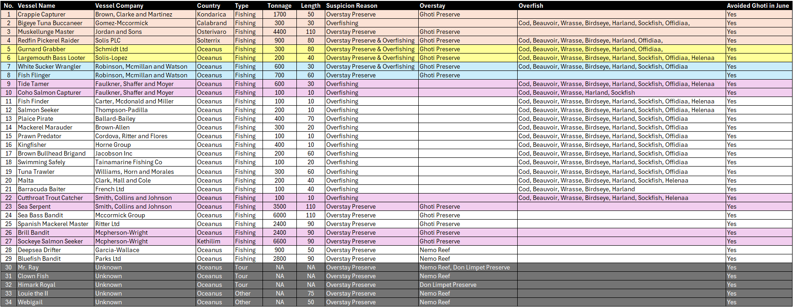
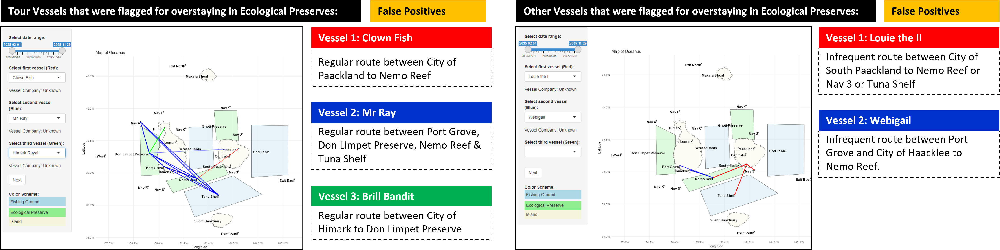
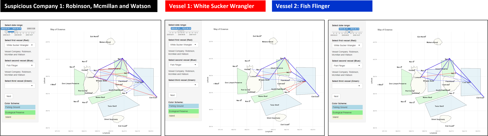
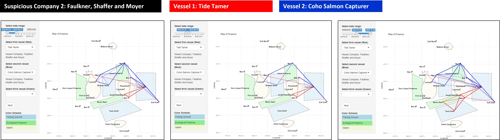
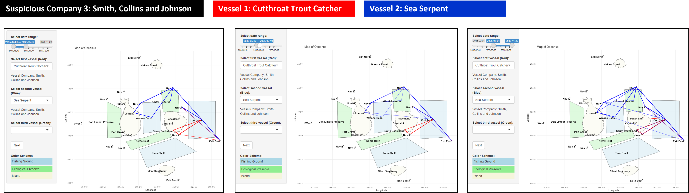
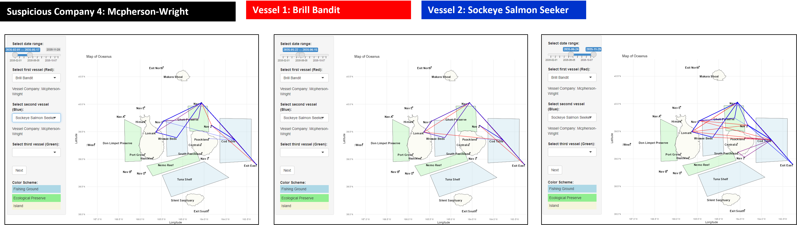

Group 1 - Arya Siahaan, Seng Jing Yi, Thet Myat Noe
Published
July 2, 2024
Objectives
In this article, we will summarise our findings on suspicious vessels and companies based on the vessels identified under “IUU Suspicion”.
Code
# Summary of codes to identify suspicious vessels based on IUU suspicionpacman::p_load(jsonlite, tidyverse, tidyr, knitr, lubridate, dplyr, igraph, ggraph, ggdist, ggplot2, SmartEDA, sf, tidygraph, reshape2, readr, DT, patchwork,plotly, RColorBrewer)tx_qty <-read_csv("data/tx_qty.csv")ping_activity <-read_csv("data/ping_activity.csv")E_Hbrpt_v <-read_csv("data/hbrpt.csv")N_vessel <-read_csv("data/N_vessel.csv")#location_legend <- read_csv("data/location_legend.csv")#vessel_movement <- read_rds("data/rds/vessel_movement_data.rds")nearest_tx_date <-read_csv("data/mapped_records.csv")time_summary_df <-read_csv("data/time-summary.csv")## Determine vessels that have overstayed ping_activity$start_time <-ymd_hms(ping_activity$start_time)ping_activity$month <-floor_date(ping_activity$start_time, "month")# Convert the month column to Date format (first day of each month)ping_activity$month <-as.Date(ping_activity$month)# Calculate median dwell time per vessel_id per month for each areaagg_data <- ping_activity %>%group_by(area, vessel_id, month) %>%summarise(median_dwell =median(dwell, na.rm =TRUE)) %>%ungroup()agg_data2 <- agg_data %>%group_by(area, month) %>%mutate(`90%_dwell_time`=quantile(median_dwell, 0.90, na.rm =TRUE)) %>%mutate(`Is_above_90%`=ifelse(median_dwell >`90%_dwell_time`, "Yes", "No")) %>%ungroup()# count the number of times that vessel stayed >90% dwell timesummary_data <- agg_data2 %>%filter(area %in%c( "Ghoti Preserve", "Nemo Reef", "Don Limpet Preserve"), `Is_above_90%`=="Yes") %>%group_by(vessel_id, area) %>%summarise(count_above_90 =n()) %>%filter(count_above_90 >=2) %>%ungroup()summary_data_DT <- summary_data %>%left_join(N_vessel %>%select("vessel_id", "vessel_name", "vessel_company", "vessel_type", "tonnage", "length_overall", "flag_country"), by =c("vessel_id"="vessel_id"))## Codes to identify overfishing vessels vessel_cargo_map <- nearest_tx_date %>%left_join(N_vessel, by =c("vessel_id"="vessel_id")) %>%group_by(cargo_id, tx_date, vessel_id, fish_species) %>%summarise(percent_fill = qty_tons/tonnage)vessel_cargo_map <- vessel_cargo_map %>%mutate(tx_date =as.Date(tx_date))vessel_cargo_map <- vessel_cargo_map %>%group_by(fish_species, month =floor_date(tx_date, "month")) %>%mutate(monthly_mean =mean(percent_fill, na.rm =TRUE),percentile_90 =quantile(percent_fill, 0.90, na.rm =TRUE)) %>%mutate(percent_fill_above_90 =ifelse(percent_fill > percentile_90, "Yes", "No")) %>%ungroup()vessel_percent_fill_counts <- vessel_cargo_map %>%filter(percent_fill_above_90 =="Yes") %>%group_by(vessel_id) %>%summarize(count_above_90 =n()) %>%ungroup()# Filter for vessel_id with count >= 5filtered_vessel_counts <- vessel_percent_fill_counts %>%filter(count_above_90 >=20)# Summarising for table sus_overfish_cargo <- nearest_tx_date %>%filter(vessel_id %in% filtered_vessel_counts$vessel_id) %>%group_by(vessel_id, fish_species) %>%summarize(total_qty_tons =sum(qty_tons, na.rm =TRUE),distinct_cargo_count =n_distinct(cargo_id)) %>%ungroup()# identifying vessel diversionvessel_trips <- time_summary_df %>%mutate(start_date =as.Date(start_date))# Define the cutoff date for 14 May 2035cutoff_date <-as.Date("2035-05-14")trips_before_cutoff <- vessel_trips %>%filter(start_date <= cutoff_date)# Filter trips that started in June 2035trips_in_june <- vessel_trips %>%filter(start_date >=as.Date("2035-06-01") & start_date <as.Date("2035-07-01"))# Filter trips that started after 14 May 2035trips_after_cutoff <- vessel_trips %>%filter(start_date > cutoff_date)# Function to get unique areasget_unique_areas <-function(data) { data %>%pull(unique_areas) %>%strsplit(", ") %>%unlist() %>%unique()}# Get unique areas per vessel before the cutoff dateareas_before_cutoff <- trips_before_cutoff %>%group_by(vessel_id) %>%summarize(areas_before =list(get_unique_areas(cur_data())))# Get unique areas per vessel after the cutoff dateareas_after_cutoff <- trips_after_cutoff %>%group_by(vessel_id) %>%summarize(areas_after =list(get_unique_areas(cur_data())))# Get unique areas per vessel in June 2035areas_in_june <- trips_in_june %>%group_by(vessel_id) %>%summarize(areas_june =list(get_unique_areas(cur_data())))# Combine the datacombined_areas <-full_join(areas_before_cutoff, areas_after_cutoff, by ="vessel_id") %>%full_join(areas_in_june, by ="vessel_id")# Determine new areas visited, old areas avoided, and old areas avoided in June for each vesselresults <- combined_areas %>%rowwise() %>%mutate(new_areas =if(length(setdiff(areas_after, areas_before)) >0) paste(setdiff(areas_after, areas_before), collapse =", ") elseNA,old_areas_avoided =if(length(setdiff(areas_before, areas_after)) >0) paste(setdiff(areas_before, areas_after), collapse =", ") elseNA,old_areas_avoided_june =if(length(setdiff(areas_before, areas_june)) >0) paste(setdiff(areas_before, areas_june), collapse =", ") elseNA,new_areas_count =ifelse(is.na(new_areas), 0, length(unlist(strsplit(new_areas, ", ")))),old_areas_avoided_count =ifelse(is.na(old_areas_avoided), 0, length(unlist(strsplit(old_areas_avoided, ", ")))),old_areas_avoided_june_count =ifelse(is.na(old_areas_avoided_june), 0, length(unlist(strsplit(old_areas_avoided_june, ", ")))) ) %>%ungroup()# Add new columns to identify vessels that avoided "Ghoti Preserve" in June but returned after the cutoff periodresults <- results %>%mutate(avoided_ghoti_june =ifelse(grepl("Ghoti Preserve", old_areas_avoided_june), TRUE, FALSE),returned_to_ghoti_after_cutoff =ifelse(avoided_ghoti_june &grepl("Ghoti Preserve", areas_after), TRUE, FALSE))# Select relevant columns for the final outputfinal_results <- results %>%select(vessel_id, new_areas, old_areas_avoided, old_areas_avoided_june, new_areas_count, old_areas_avoided_count, old_areas_avoided_june_count, avoided_ghoti_june, returned_to_ghoti_after_cutoff)# combining the 3 datasets to identify suspicious vesselsoverstay_vessel <- summary_datadiverted_vessel <- N_vessel %>%filter(vessel_id %in% final_results$vessel_id) %>%select(vessel_id, vessel_company)overfish_vessel <- sus_overfish_cargooverstay_vessel_processed <- overstay_vessel %>%mutate(count =1) %>%pivot_wider(names_from = area, values_from = count, values_fill =list(count =0)) %>%rename_at(vars(-vessel_id), ~paste0("overstay_", gsub(" ", "_", .)))# Aggregate to ensure one row per vessel_idoverstay_vessel_agg <- overstay_vessel_processed %>%group_by(vessel_id) %>%summarise(across(starts_with("overstay_"), ~sum(. !=0)))# Process the overfish_vessel dataframeoverfish_vessel_processed <- overfish_vessel %>%mutate(count =1) %>%pivot_wider(names_from = fish_species, values_from = count, values_fill =list(count =0)) %>%rename_at(vars(-vessel_id), ~paste0("overfish_", gsub(" ", "_", .)))# Aggregate to ensure one row per vessel_idoverfish_vessel_agg <- overfish_vessel_processed %>%group_by(vessel_id) %>%summarise(across(starts_with("overfish_"), ~sum(. !=0)))# Process the diverted_vessel dataframediverted_vessel_processed <- diverted_vessel %>%mutate(diverted =1) %>%select(vessel_id, diverted)# Merge the dataframescombined_df <- overstay_vessel_agg %>%full_join(overfish_vessel_agg, by ="vessel_id") %>%full_join(diverted_vessel_processed, by ="vessel_id") %>%mutate(across(starts_with("overstay_"), ~replace_na(.x, 0)),across(starts_with("overfish_"), ~replace_na(.x, 0)),diverted =replace_na(diverted, 0)) %>%select(-c("overstay_count_above_90", "overfish_total_qty_tons", "overfish_distinct_cargo_count"))# Remove specified columnscombined_df <- combined_df %>%rowwise() %>%mutate(count_of_overstay_areas =sum(c_across(2:4)),count_of_overfish_species =sum(c_across(5:12)),suspicion_count = count_of_overstay_areas + count_of_overfish_species + diverted)# Remove specified columnslikely_suspicious <- combined_df %>%filter(suspicion_count >=2) %>%arrange(desc(suspicion_count))sus_vessel <- likely_suspicious %>%left_join(N_vessel %>%select(vessel_id, vessel_name, vessel_company, flag_country, vessel_type, tonnage, length_overall), by =c("vessel_id"))#write_csv(sus_vessel, "data/sus_vessel.csv")
Summarising the suspicious vessels, we observed a total of 34 vessels.

Out of the 34 vessels, 3 are tour vessels (Mr. Ray, Clown Fish and Himark Royal) and 2 vessels (Webigail and Louie the II) under “Others” which may be used for recreational use with unknown company from Oceans. Hence overstaying in preserves might be deemed reasonable.

This leaves us with 29 suspicious fishing vessels, 4 of which are non-Oceanus.
Redfin Pickerel Raider from Solis PLC of Solterrrix for both overstaying in Ghoti and overfishing multiple fish species.
Bigeye Tuna Buccaneer from Calabrand for overfishing multiple fish species.
Crappie Capturer from Kondarica & Muskellunge Master from Osterivaro for overstaying in Ghoti Preserve
We further observed 4 notable companies with more than 1 vessels identified as suspicious which prompts further investigation. This includes:
Company of “Robinson, Mcmillan and Watson” for their vessels of White Sucker Wrangler and Fish Flinger.

Company of “Faulkner, Shaffer and Moyer” for their vessels of Tide Tamer and Coho Salmon Capturer.

Company of “Smith, Collins and Johnson” for their vessels of Cutthroat Trouth Catcher and Sea Serpent

Company of “Mcpherson-Wright” for their vessels of “Brill Bandit” and “Sockeye Salmon Seeker”.

All of these vessels has a disappearance from Ghoti Reserve, or drastic drop in visit for Sea Serpent to Ghoti Preserve in the month of June 2035.